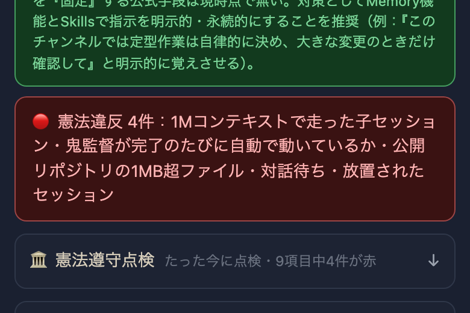
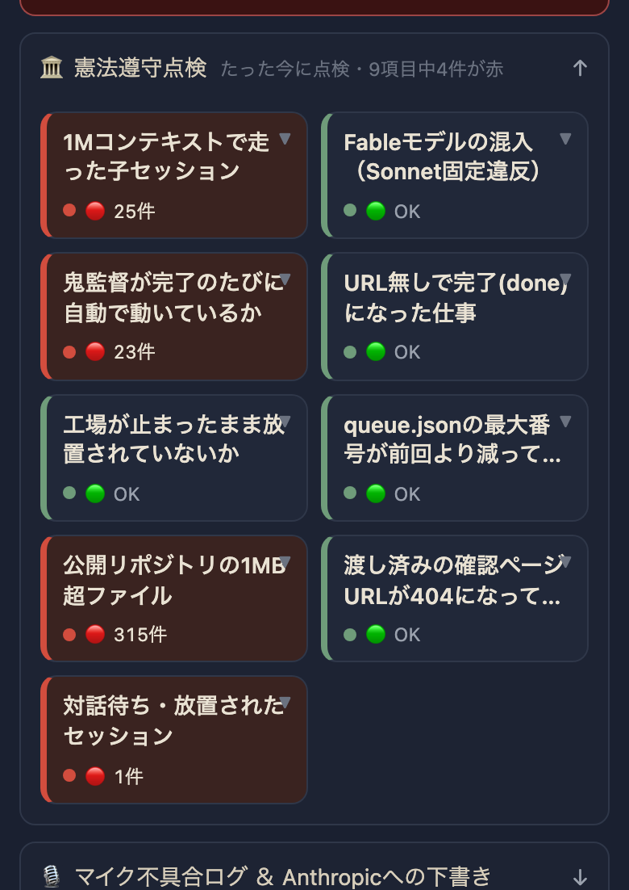

tools/kenpou_check.pyが毎日1回チェックする。結果はstatus/kenpou_check.jsonに書かれ、進捗表(index.html)の🏛️憲法遵守点検セクションに赤/緑で出る。赤が出た項目は既存のqueue_add()経由で直すタスクを自動的に発車待ちへ積む（同じ内容が既に列にあれば重複して積まない）。毎日09:10 JSTにlaunchd(com.tamago.tamago-shinchoku.kenpou-check)が自動実行し、点検そのものが24時間止まっていればフロント側が気づいて赤にする。


| 確認項目 | 結果 |
|---|---|
| 1Mコンテキストで走った子セッション | 直近25本中25本が赤（714番と重複のためタスクは積み直さず） |
| 鬼監督が完了ごとに自動で動いているか | 直近24h完了23件中0件に記録あり＝赤（684番と重複のためタスクは積み直さず） |
| URL無しで完了(done)になった仕事 | 0件・緑 |
| 工場が止まったまま放置 | 走行3/上限3で正常・緑 |
| queue.json最大番号の退行 | 前回比減少なし・緑 |
| 公開リポジトリの1MB超ファイル | 315件・赤→717番として発車待ちへ自動追加 |
| 渡し済み確認ページの404 | 直近15件すべて200・緑 |
| 対話待ち・放置セッション | プロセス消滅済みのrunningを検出・赤→718番として発車待ちへ自動追加 |